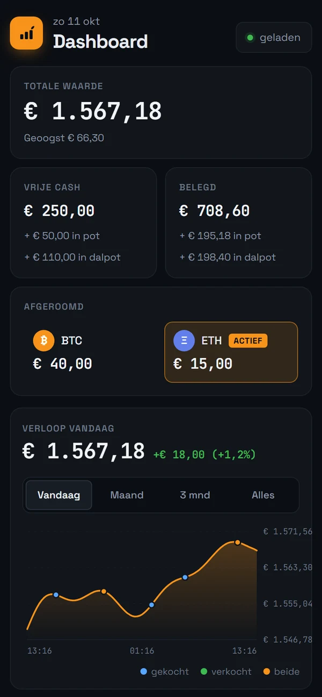
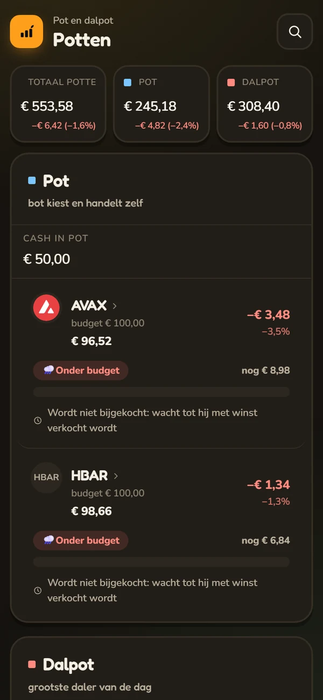
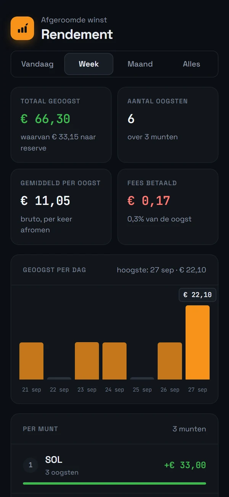
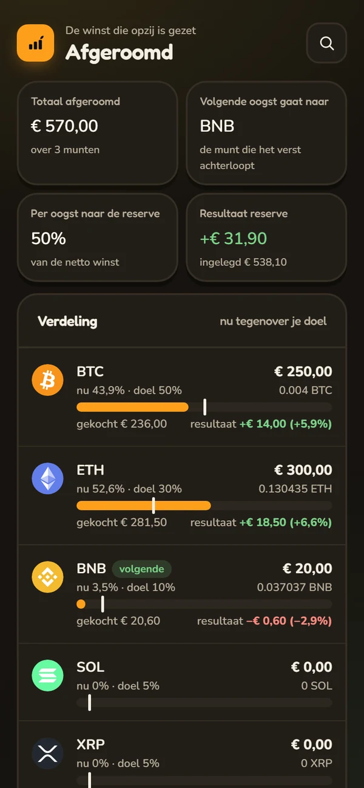
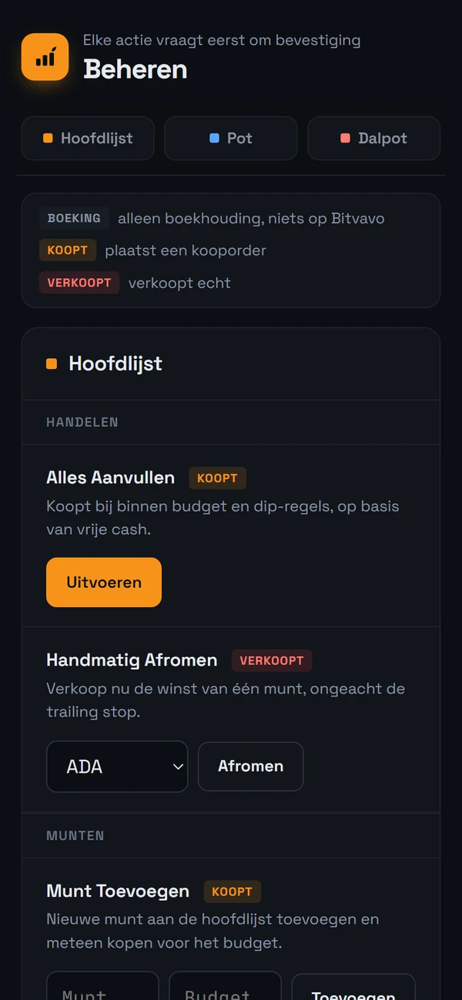
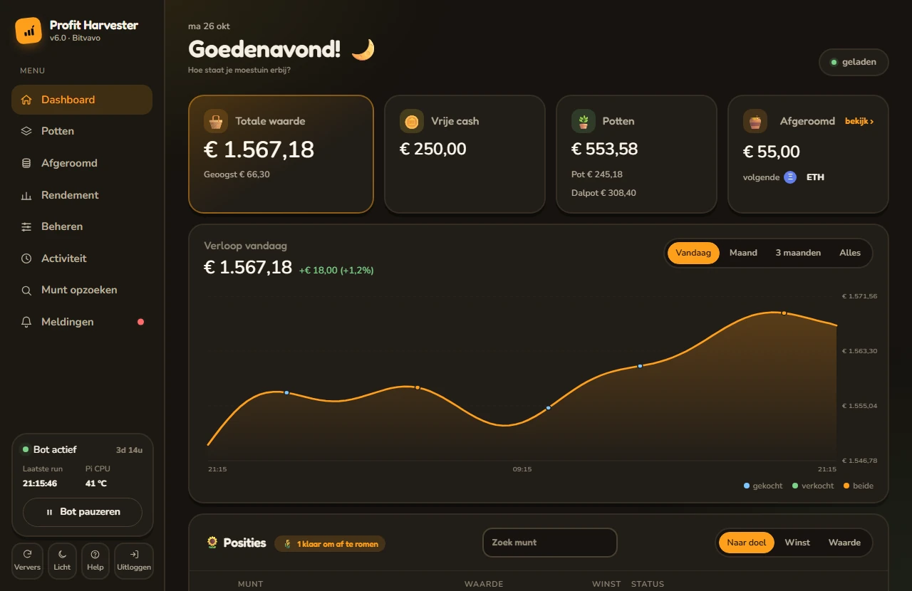

Profit Harvester is een gratis bot die dag en nacht je munten op Bitvavo in de gaten houdt. Stijgt een munt genoeg, dan verkoopt hij alleen het stuk boven je budget. De helft van die winst gaat naar je reserve in grote munten zoals Bitcoin, Ethereum en Solana; de verdeling kies je zelf.
De meeste bots kopen een munt en verkopen hem later helemaal. Profit Harvester laat je budget belegd en roomt steeds opnieuw de winst af. De nummers horen bij het plaatje hierboven.
Kies zelf hoeveel risico je neemt. De hoofdlijst is rustig; in de pot en de dalpot handelt de bot zelf, alleen met het geld dat jij erin stort.
Jouw eigen munten. De bot oogst de winst; kopen gebeurt alleen als jij op de knop drukt.
Een apart potje waarin de bot zelf beweeglijke, goed verhandelde munten kiest, koopt en verkoopt.
De bot koopt de grootste daler van de dag en verkoopt zodra die herstelt. Voor wie van spanning houdt.
Alles wat je verder nodig hebt om de tuin bij te houden.
De helft van elke oogst gaat naar BTC, ETH, BNB, SOL, XRP of je eigen keuze. Jij kiest de verdeling; de bot vult steeds de munt aan die het verst achterloopt. Met één knop herbalanceer je.
Een melding bij elke oogst en aankoop, en knoppen voor je pot, dalpot, afgeroomde winst, munt opzoeken en pauzeren. Elke avond een rapport in je mailbox.
Totale waarde, een grafiek met je aan- en verkopen, rendement per periode en een sorteerbaar orderlogboek. Op je telefoon zet je hem als app op je beginscherm.
Typ BTC of Bitcoin en zie meteen of een munt op Bitvavo te verhandelen is, met koers en volume. Met één klik zet je hem in je hoofdlijst.
Elke knop vraagt om bevestiging met de bedragen erbij, en waarschuwt als er iets niet klopt, zoals te weinig cash.
Zie of de bot draait, wanneer hij voor het laatst keek en hoe warm je Pi is. Met één knop zet je hem op pauze.
Zakt de winst tijdens het volgen van de top terug tot €10,50, dan verkoopt de bot meteen. Zo kan de helft altijd naar je reserve.
Alles wat de bot meldt, staat ook achter het belletje in het menu, ook zonder Telegram.
Download al je orders, met je filters, voor Excel of je boekhouding.






Alle bedragen op deze afbeeldingen zijn verzonnen.
Echte koersen van Bitvavo, maar met nepgeld. Je hebt geen account en geen API-sleutel nodig. Alles werkt zoals echt, en overstappen is één regel in je instellingen.
De bot draait op je eigen Raspberry Pi of pc. Je Bitvavo-sleutels staan alleen daar, in je eigen instellingenbestand. Er gaat niets naar een server van iemand anders.
Geef je API-sleutel alleen de rechten Bekijken en Handelen. Zonder het recht Opnemen kan niemand via de bot geld van je account halen.
Inloggen met een wachtwoord van minimaal 16 tekens, blokkade na 5 foute pogingen, en de Telegram-bot reageert alleen op jouw eigen chat.
Alle code staat openbaar op GitHub. Iedereen kan controleren wat de bot doet; er zit niets verborgen in.
Je hebt een Raspberry Pi (of een computer die altijd aan staat) met Docker nodig. De volledige uitleg voor beginners, met Telegram, e-mail en je Bitvavo-sleutel, staat in de installatiehandleiding.
curl -fsSL https://get.docker.com | sh sudo usermod -aG docker $USER
Log daarna één keer uit en weer in.
git clone https://github.com/Dokmannl/profit-harvester.git cd profit-harvester
cp .env.example .env
nano .env # vul minimaal DASHBOARD_TOKEN in
De bot staat standaard in demo-modus.
docker compose up -d
Open http://<ip-van-je-pi>:5000 en log in.
Niets. Profit Harvester is gratis en open source (MIT-licentie). Je betaalt alleen de gewone handelskosten van Bitvavo. Een donatie wordt gewaardeerd, maar is nooit verplicht.
Een Pi is ideaal: zuinig, stil en altijd aan. Een gewone pc of server met Linux, Windows of macOS werkt ook, met of zonder Docker.
Voor de hoofdlijst alleen als jij het vraagt: bij "Munt toevoegen" koopt hij meteen voor het budget dat je invult, en bij "Alles aanvullen" vult hij munten onder hun budget bij. Uit zichzelf koopt hij daar nooit. De pot en dalpot kopen wel zelf, maar alleen met het geld dat jij daar bewust in stort.
Nee. Daalt een munt, dan verkoopt de bot niet met verlies; hij wacht tot de munt herstelt. Dat past bij het idee van lang aanhouden en winst oogsten, maar het betekent ook dat een munt lang onder water kan staan.
Nee, Profit Harvester is speciaal gemaakt voor Bitvavo en handelt in EUR-markten.
Dat kan niemand beloven. Het hangt af van de markt, je munten en je instellingen. De bot oogst alleen als munten stijgen. Probeer het eerst in demo-modus en begin daarna klein.
Meld het via Issues op GitHub. Een beveiligingsprobleem meld je liever privé via het tabblad Security.
Profit Harvester is gratis. Een kleine donatie helpt om de bot te blijven verbeteren.
bc1q0sjsskrmmmtm9zj2vaeady8h37w280xxffve6n0x798483b4749654Fa0C1bffb95F27d7C401955c246Qe6o5FMQUUMifxAdzE75SsekYsFX6Bgft3JGPdmGJRTStuur elke munt alleen naar het eigen adres en via het eigen netwerk: BTC via Bitcoin, ETH via Ethereum, SOL via Solana.